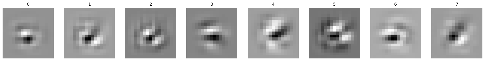
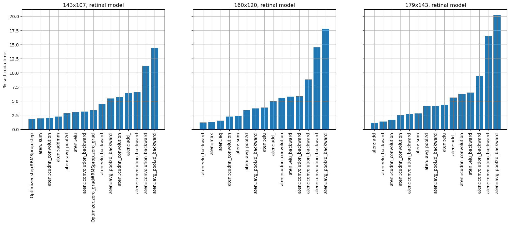

Kernel size = 5
Kernel size = 5
 Kernel size = 3
Kernel size = 3

Kernels after last conv layer in architecture shown:
Sequential(
(0): Conv2d(1, 32, kernel_size=(9, 9), stride=(1, 1), padding=(4, 4)) <--- greyscale input
(1): ReLU(inplace=True)
(2): Conv2d(32, 1, kernel_size=(9, 9), stride=(1, 1), padding=(4, 4)) <--- note: bottleneck
(3): ReLU(inplace=True)
(4): Conv2d(1, 32, kernel_size=(9, 9), stride=(1, 1), padding=(4, 4))
(5): ReLU(inplace=True)
(6): Conv2d(32, 32, kernel_size=(9, 9), stride=(1, 1), padding=(4, 4)) <--- RFs from here
(7): ReLU(inplace=True)
(8): Flatten(start_dim=1, end_dim=-1)
(9): Linear(in_features=32768, out_features=1024, bias=True)
(10): ReLU(inplace=True)
(11): Linear(in_features=1024, out_features=10, bias=True)
(12): Softmax(dim=-1)
)
Kernel size = 9 (orig)
Kernel size = 7
Kernel size = 5
Kernel size = 3
-> Kernel size does not matter as much!
Kernel size 5, color input
ELU » ~ 52% accuracy

GELU » ~ 54% accuracy
 SELU » ~ 50% accuracy
SELU » ~ 50% accuracy
 Tanh » ~ 53% accuracy
RELU » ~ 62% accuracy
Tanh » ~ 53% accuracy
RELU » ~ 62% accuracy

-> Use GELU!
Pool in early layers:
Sequential(
(0): Conv2d(3, 32, kernel_size=(3, 3), stride=(1, 1), padding=(1, 1))
(1): GELU(approximate='none')
(2): AvgPool2d(kernel_size=2, stride=2, padding=0) <--- Pool
(3): Conv2d(32, 1, kernel_size=(3, 3), stride=(1, 1), padding=(1, 1)) <--- RFs shown
(4): GELU(approximate='none')
(5): AvgPool2d(kernel_size=2, stride=2, padding=0) <--- Pool
(6): Conv2d(1, 32, kernel_size=(3, 3), stride=(1, 1), padding=(1, 1)) <--- RFs shown
(7): GELU(approximate='none')
(8): Conv2d(32, 32, kernel_size=(3, 3), stride=(1, 1), padding=(1, 1)) <--- RFs shown
(9): GELU(approximate='none')
(10): Flatten(start_dim=1, end_dim=-1)
(11): Linear(in_features=2048, out_features=1024, bias=True)
(12): GELU(approximate='none')
(13): Linear(in_features=1024, out_features=10, bias=True)
(14): Softmax(dim=-1)
)
Bottleneck:
 Mid:
Last:
Mid:
Last:
Pool in late layers:
Sequential(
(0): Conv2d(3, 32, kernel_size=(5, 5), stride=(1, 1), padding=(2, 2))
(1): ReLU(inplace=True)
(2): Conv2d(32, 1, kernel_size=(5, 5), stride=(1, 1), padding=(2, 2)) <--- RFs shown
(3): ReLU(inplace=True)
(4): Conv2d(1, 32, kernel_size=(5, 5), stride=(1, 1), padding=(2, 2)) <--- RFs shown
(5): ReLU(inplace=True)
(6): AvgPool2d(kernel_size=2, stride=2, padding=0) <--- Pool
(7): Conv2d(32, 32, kernel_size=(5, 5), stride=(1, 1), padding=(2, 2)) <--- RFs shown
(8): ReLU(inplace=True)
(9): AvgPool2d(kernel_size=2, stride=2, padding=0) <--- Pool
(10): Flatten(start_dim=1, end_dim=-1)
(11): Linear(in_features=2048, out_features=1024, bias=True)
(12): ReLU(inplace=True)
(13): Linear(in_features=1024, out_features=10, bias=True)
(14): Softmax(dim=-1)
)
Bottleneck:
Mid:
Last:

Pool everywhere:
Sequential(
(0): Conv2d(3, 32, kernel_size=(5, 5), stride=(1, 1), padding=(2, 2))
(1): ReLU(inplace=True)
(2): AvgPool2d(kernel_size=2, stride=2, padding=0) <--- Pool
(3): Conv2d(32, 1, kernel_size=(5, 5), stride=(1, 1), padding=(2, 2)) <--- RFs shown
(4): ReLU(inplace=True)
(5): AvgPool2d(kernel_size=2, stride=2, padding=0) <--- Pool
(6): Conv2d(1, 32, kernel_size=(5, 5), stride=(1, 1), padding=(2, 2)) <--- RFs shown
(7): ReLU(inplace=True)
(8): AvgPool2d(kernel_size=2, stride=2, padding=0) <--- Pool
(9): Conv2d(32, 32, kernel_size=(5, 5), stride=(1, 1), padding=(2, 2)) <--- RFs shown
(10): ReLU(inplace=True)
(11): AvgPool2d(kernel_size=2, stride=2, padding=0) <--- Pool
(12): Flatten(start_dim=1, end_dim=-1)
(13): Linear(in_features=128, out_features=1024, bias=True)
(14): ReLU(inplace=True)
(15): Linear(in_features=1024, out_features=10, bias=True)
(16): Softmax(dim=-1)
)
Bottleneck:
Mid:
Last:


model: only conv layer

model: conv layer and avg pool